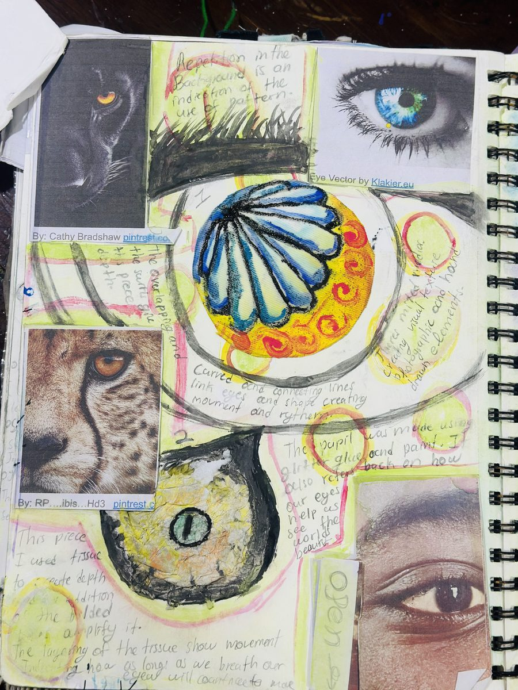
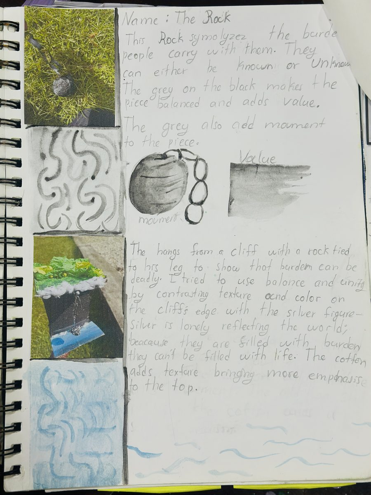
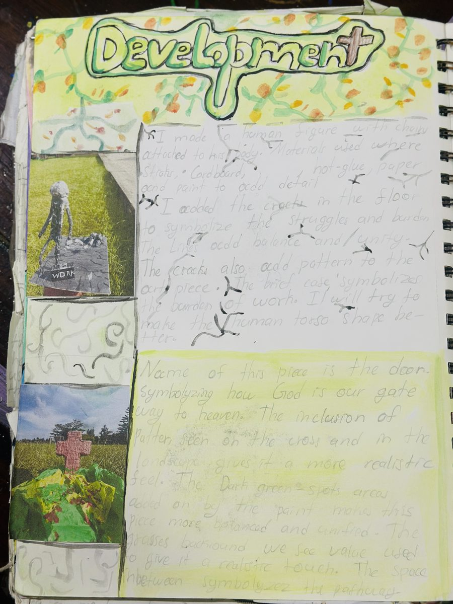
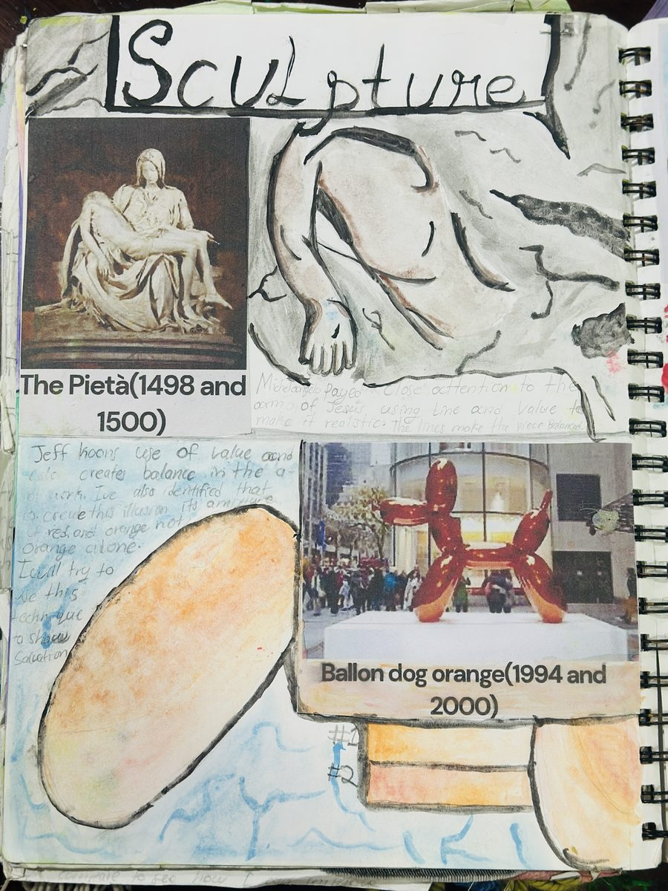
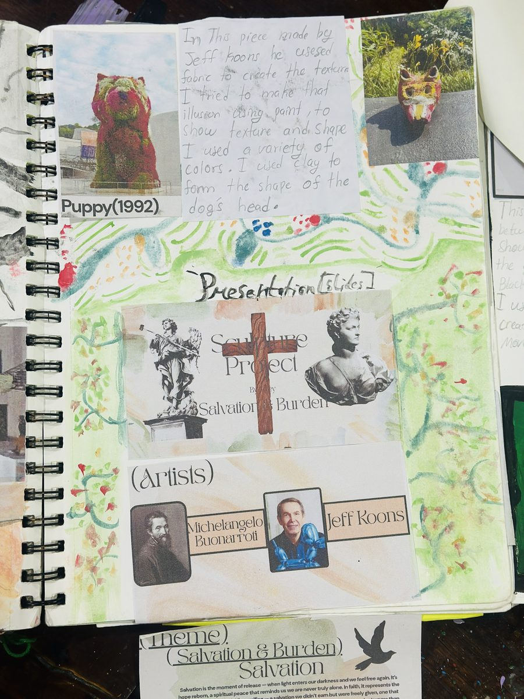
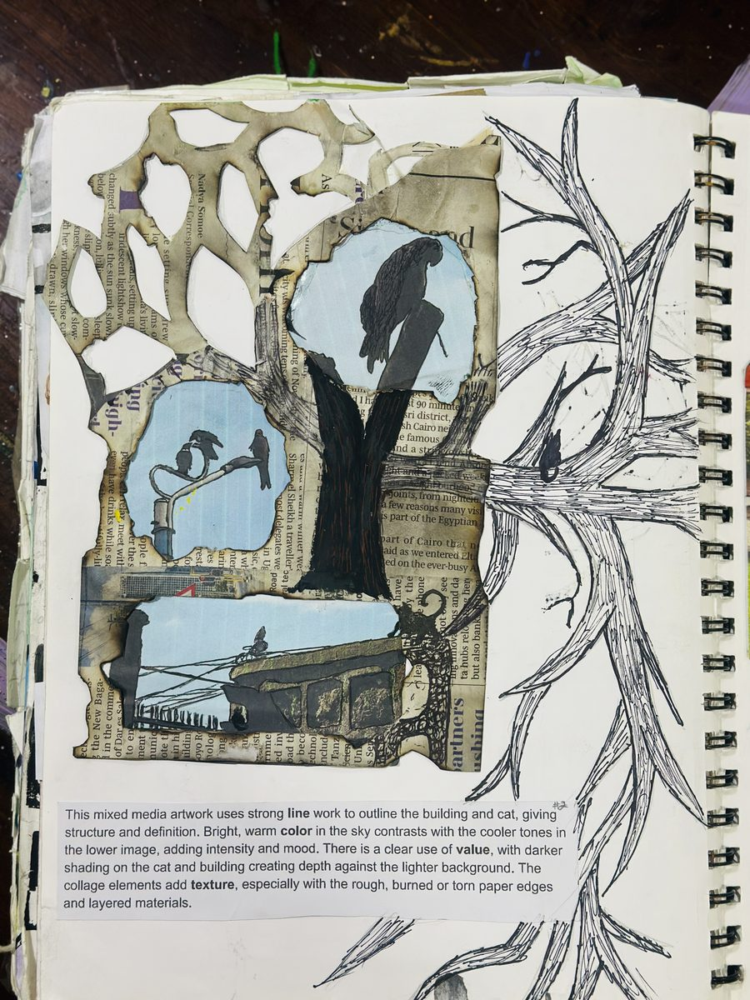

Art Portfolio · 2024–2025
AdjeyHirwa
Exploring the weight of existence — through paint, clay, print, and collage — in pursuit of beauty, burden, and the grace between them.

16Works
5Disciplines
3Themes

Art Portfolio · 2024–2025
Exploring the weight of existence — through paint, clay, print, and collage — in pursuit of beauty, burden, and the grace between them.
Final Works — Selected Pieces


Sculpture Unit · 2025

The Final Plan — Concept Sketch
Power of Prayer · Salvation & Grace
The Rock — Symbolism
Value studies · Burden
Development — The Door
Salvation as gateway
Research — Pietà & Koons
Michelangelo · Jeff Koons
Jeff Koons · Artist Study
Salvation & Burden overview
About the Artist
Born in Rwanda in December 2009, I see art as a quiet conversation between the soul and the natural world. The hills, the skies, the trees, and the silence within them inspire the way I create. Nature carries a kind of peace that words often cannot hold, and through my art, I try to express that feeling.
Every piece is a fragment of calm, a moment of stillness, and a reminder of the beauty that exists in both the world around us and within us. “He makes me lie down in green pastures, He leads me beside quiet waters, He refreshes my soul.” — Psalm 23:2–3
This sketchbook is my inner artist’s journey, from knowing nothing to knowing that there is more than one way to look at things: My art journey is a space of research, failure, discovery, and development that drives each final piece.
Disciplines
Process & Development
Where every idea is born, tested, and transformed. Pages flip in as you scroll — each one a window into the thinking behind the work.

Birds & Tree · Mixed Media
Line, colour, texture study
Cat on Building · Oil Pastel
Emphasis · Contrast · MovementTree · Development Page
Value, space, collage & fabric
Robert Rauschenberg Study
Retroactive (1964) · LayeringLino-Cut · Freedom Series
Hand · Hope · FreeEye Theme · Development
Glitter pupil · Tissue depth
Eye Theme · Artist Research
Value · Balance · Scale
Freedom and constraint Theme · Artist Research
Value · Balance · Scale
Nature Theme · Artist Research
Value · Balance · Scale
Eye Theme · Artist Research
Value · Balance · ScaleConceptual Threads
The central project. A meditation on the weight we carry — seen in the rock, the chain, the hunched figure — and the possibility of grace. Informed by Michelangelo and Jeff Koons. Expressed through sculpture.
Explored through the lino-cut series. The hand — open or clenched — becomes a symbol of the struggle between liberation and control. “HOPE” and “FREE” interrogate language as form and content simultaneously.
A recurring image: the eye that watches and sees. Large-format mixed media pieces explore the pupil as a window — to the self, to the world, to the divine. Textile and tissue amplify craft and vulnerability.
The leaf as a microcosm. The tree as structure and metaphor. African fabric, lush greens, and mountains appear in compositions asking how beauty persists across every season.
Collaged city skylines, newspaper fragments, and playing-card borders layer the personal with the cultural. Works that hold the tension between where we are and where we come from.
The sketchbook is inseparable from the finished work. Failures are documented, materials tested, and reflections written. Art-making here is understood as thinking — iterative, curious, and unafraid.